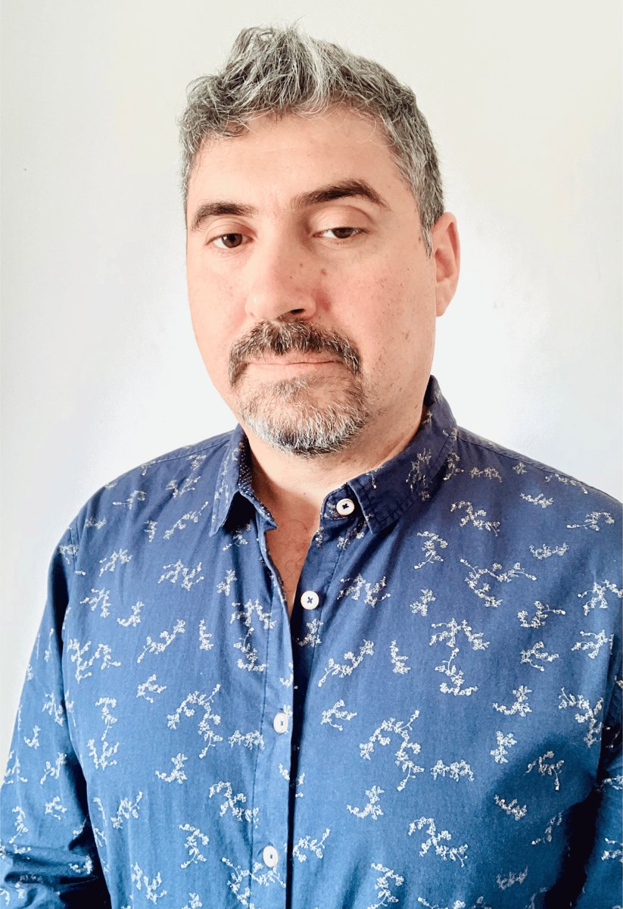

Diseño experiencias de aprendizaje virtual que se viven: rutas claras, recursos interactivos, video e inteligencia artificial al servicio de cada curso.

Somos una empresa que trabaja en el desarrollo humano y en la educación, usando tecnologías de punta. Unimos rigor pedagógico, creatividad e inteligencia artificial para crear cursos y experiencias formativas que motivan, se entienden y se completan.
Un recorrido por cursos reales: rutas en Moodle, textos de estudio diseñados, actividades interactivas y clases con avatares de IA.
Recibo los contenidos de la institución y los transformo en una experiencia completa, lista para el estudiante.
Diseño instruccional, objetivos, secuencia de módulos, evaluación y retroalimentación.
Montaje de cursos, configuración, H5P, cuestionarios, foros y soporte continuo a docentes y estudiantes.
Líneas de tiempo, mapas conceptuales, arrastrar y soltar, casos y juegos, a la medida de cada necesidad.
Edición de clases grabadas, subtítulos, cortes de silencios y piezas breves para cada unidad.
Clases y presentaciones con avatares de inteligencia artificial y guiones pedagógicos.
Diseño gráfico y editorial de textos y guías, accesibles y atractivos.
Sugerencia de recursos, herramientas y metodologías activas para cada curso.
Páginas de difusión e inscripción para cursos y programas formativos.
Diseño instruccional del curso para docentes: ruta de aprendizaje por módulos, actividades interactivas de activación y aplicación, edición de videos de clases y soporte en Moodle.
Diseñador instruccional y coordinador de capacitaciones: cursos e-learning para empresas, con rutas en Moodle, textos de estudio diseñados, cuestionarios gamificados y clases en video.
Recurso interactivo para un curso sobre inteligencia artificial en la docencia: contenidos navegables, preguntas y botones de exploración.
Academia Sonofrecuencia · 2022 – actualidadCursos asincrónicos en Moodle con automatización de rutas, H5P, IA, quizzes, foros y recursos multimedia.
Páginas de un programa formativo, diseñadas, publicadas y conectadas a WhatsApp e inscripción.
Necesidades, perfil del estudiante y objetivos de la institución.
Diseño instruccional, módulos, evaluación y cronograma.
Textos, videos, avatares e interactivos a partir de los insumos del experto.
Curso en Moodle configurado, probado y listo para abrir.
Soporte a docentes y estudiantes y mejoras continuas.
Diseñador instruccional · Docente universitario · Fundador de Sonofrecuencia
Diseñador instruccional y docente universitario con experiencia en educación virtual desde 2016. Especialista en cursos e-learning, Moodle, IA aplicada, gamificación y metodologías activas.
Conversemos sobre tu programa, tu plataforma y lo que necesitan tus estudiantes.